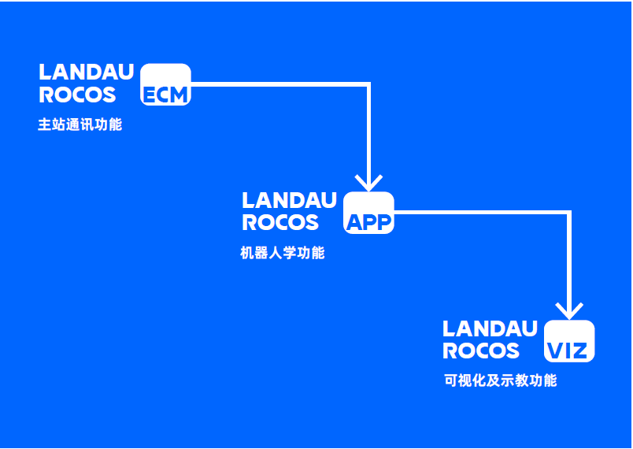
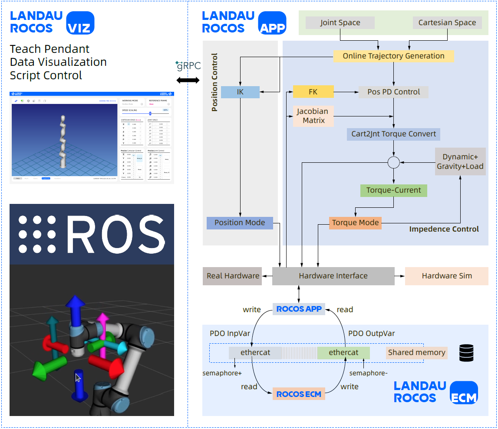
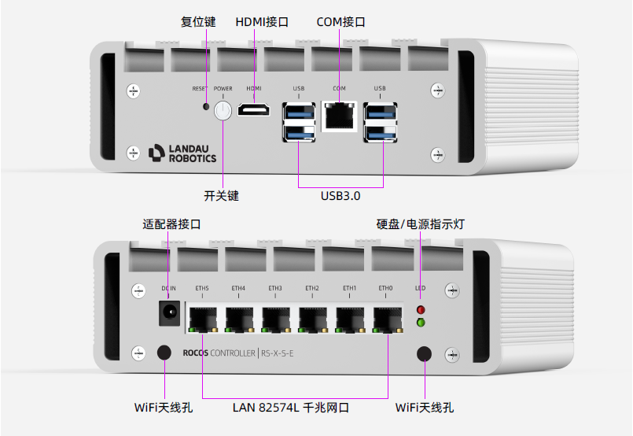
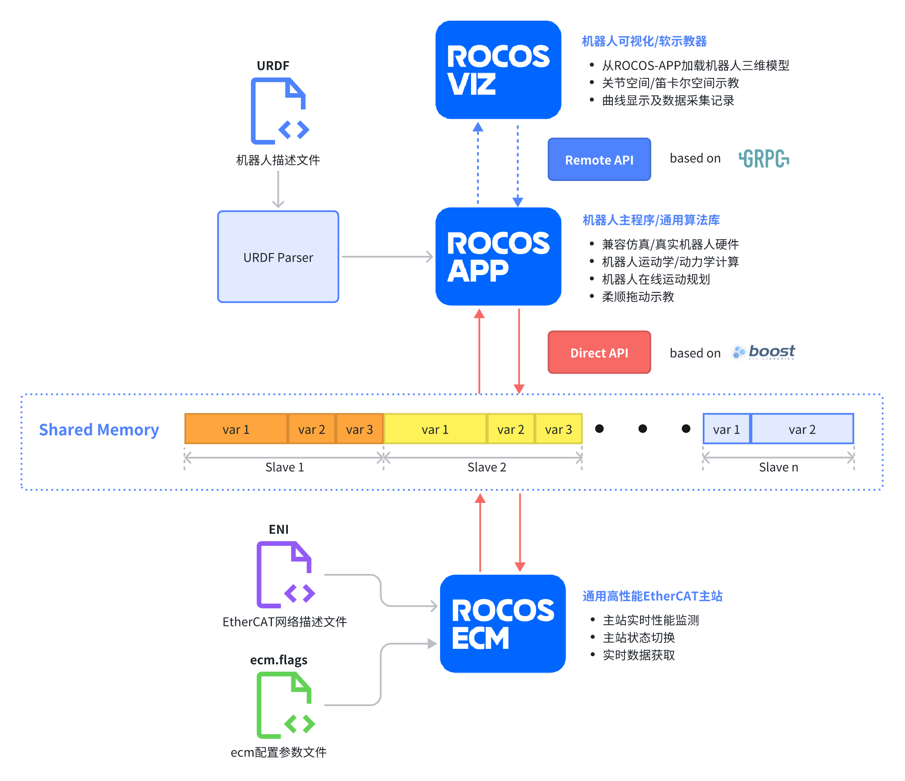

Introduction
ROCOS controller is an open-source scalable robot control system developed by me. It can provide various motion control functions and supports EtherCAT bus communication.
ROCOS control consists mainly of the following three components:
- ROCOS-ECM: A high-performance general-purpose EtherCAT master, used for bus data acquisition, which quickly loads network topology configurations via ENI files.
- ROCOS-APP: Supports URDF configuration (only supports serial configurations; parallel configurations require customized algorithm modules).
- ROCOS-VIZ: A general-purpose visual soft teach pendant that provides functions such as remote connection, 3D visualization, curve display, jog teaching, and precise control.

Three levels of APIs are provided to meet customers' various development needs:
- Direct Servo API: Featuring the highest performance and the lowest-level development method, it enables direct access to EtherCAT bus data, bus status query, EtherCAT state machine switching, etc., and supports direct servo drive (velocity, position, torque).
- Robotics Direct API: Developed based on C++, with performance comparable to Servo API. It configures robot-related parameters via URDF, enabling quick configuration of serial-configuration robots and easy integration into customers' own programs.
- Cross-platform Remote API: A remote RPC service developed based on gRPC, which enables remote (wired, wireless) communication methods and is easy to scale.
ROCOS controller mainly has the following characteristics:
- Quickly implement EtherCAT network topology configuration and acquire real-time process data.
- Quickly complete the development and verification of robot kinematics, dynamics, and impedance control algorithms.
- Quickly implement functions such as model visualization, curve display, data saving, and joint control.
- Highly open, capable of meeting development needs at all levels.

Features
- Supports robot 3D visualization, status display, motion control, and script programming* functions.
- Supports operation on multiple platforms such as Windows, Linux, Android*.
- Equipped with Direct API and Remote API to realize robot controller communication, which is easy to extend and meets the development needs for high real-time applications.
- Supports ROS and ROS2*.
* under development

The main applications of the ROCOS controller can be divided into several levels:
- Using the ROCOS controller as a general-purpose master station to acquire data from EtherCAT slave stations and interact directly with them, eliminating the cumbersome configuration of EtherCAT, enabling quick setup and configuration of EtherCAT, and integrating EtherCAT into one's own programs.
- Using the ROCOS controller as a servo controller that supports servo drives with DS402 (CANOpen) protocol, capable of implementing functions such as CSP (Cyclic Position Control), CSV (Cyclic Speed Control), CST (Cyclic Torque Control), while supporting offline/online synchronous trajectory planning to achieve multi-axis servo motion control.
- Using the ROCOS controller as a robot controller, which loads robot configurations through URDF files and automatically implements kinematics and dynamics calculations for robots with various degrees of freedom and configurations (6-axis, 7-axis, N-axis), enabling motion control in joint space and Cartesian space. For robots equipped with joint torque sensors or end-effector 6-axis force sensors, it can also quickly implement functions such as robot compliant drag teaching.

ROCOS-Viz is a teach pendant software with ROCOS. Through a user-friendly human-machine interface, it enables control of robots and reading of robot-related information. ROCOS-Viz is developed using cross-platform technology, allowing it to be deployed and run on multiple platforms such as Windows, Linux, Mac, and Android, facilitating user development and integration.
Use Case
Contribution & scope
Yang Luo developed the ROCOS control system with Chao Jiang, Jincheng Sun, and Xiao Wang. The project demonstrates controller operation with six- and seven-axis arms. URDF support described here covers serial robots; parallel mechanisms require custom algorithm modules.